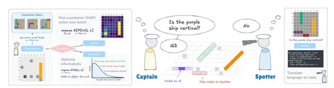

Работа об оценке LLM в агентских сценариях, где важно собирать недостающую информацию: не просто давать ответ, а понимать, когда стоит задать вопрос, какой из них будет самым полезным и когда уже пора действовать.
Для этого авторы строят бенчмарк по задаче Collaborative Battleship (вариация на тему морского боя), где участвуют два агента. Captain — агент, который не видит скрытое состояние поля и должен решать, задавать вопрос или делать выстрел, чтобы найти все корабли. Spotter — второй агент, который видит всё поле и отвечает на вопросы Captain'а в формате «да/нет».
Сам бенчмарк состоит из двух связанных частей:
• SpotterQA проверяет, насколько хорошо Spotter отвечает на вопросы по полю; для этого авторы собирают 931 "golden" вопрос.
• CaptainQA проверяет полную стратегию Captain: как он задаёт вопросы, когда перестаёт собирать информацию и насколько хорошо действует. Авторы собрали 126 полных траекторий игры от 42 участников (т.е. их отыграли человек-человек).
Использовали 18 заранее выбранных раскладок игровых досок размером 8×8, каждая из которых содержала четыре корабля. Игры начинались с пустого поля, то есть Captain в начале ничего не знал о расположении кораблей и должен был постепенно собирать картину вопросами и выстрелами. Для каждой игры действовали одинаковые ограничения: максимум 15 вопросов и максимум 40 ходов-выстрелов.
В рамках этой работы провели замер качества 15 LLM (Claude, Gemini, GPT-5 и других). Помимо оценки качества моделей как есть, ещё предложили методы повышения качества. Так, например, авторы предложили агенту-Captain добавить явную модель мира. Под этим понимается не отдельная нейросеть, а вероятностное представление о скрытом поле, то есть набор гипотез о том, как могут быть расположены корабли.
Авторы вводят три байесовские стратегии: для выбора вопроса, для выбора действия и для принятия решения «спрашивать или действовать». По данным статьи, полезность задаваемых вопросов увеличивается до +0,227 бита Expected information gain (EIG), а итоговое качество выстрелов улучшается примерно на +0,303–0,374 F1.
Авторы также показывают, что в таком сетапе Llama-4-Scout выигрывает у людей примерно в 82% случаев и у GPT-5 — примерно в 67% случаев, а при этом стоит около 1% от стоимости GPT-5.
Разбор подготовила
#YaICLR26
Душный NLP
